Contaminazione di idee
Imprenditori, ricercatori, professionisti e curiosi si incontrano con chi ha percorso strade innovative ad alto livello: startup, industria avanzata, ricerca, mercati globali.
Inno99 è il programma di Innovalley che radica la cultura dell'innovazione nell'ecosistema aquilano e abruzzese.
"Le idee migliori nascono davanti a un aperitivo."
Un percorso tra formazione, R&D e trasferimento tecnologico
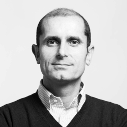
Keynote Prof. Michele Flammini · GSSI
con il Tecnopolo d'Abruzzo, West Aquila e Accyourate
Giovedì 24 settembre 2026
Irish Pub Via Verdi, L'Aquila · oltre 40 partecipanti
Con Inno99 portiamo a L'Aquila Innovalley — il punto di connessione tra le reti nazionali dell'innovazione e la comunità locale. Verticali tematiche in formato esperienziale, accessibile e ad alto contenuto qualitativo, per costruire un ecosistema in cui idee, storie e visioni si contaminano.
Imprenditori, ricercatori, professionisti e curiosi si incontrano con chi ha percorso strade innovative ad alto livello: startup, industria avanzata, ricerca, mercati globali.
I pub e i locali del centro storico diventano spazi di socialità culturale: l'innovazione esce dalle aule e abita la città, informale ma di alto profilo.
Un ponte stabile tra L'Aquila e gli ecosistemi dell'innovazione italiani, dentro la cornice di L'Aquila Capitale Italiana della Cultura 2026.
Gli Aperitivi dell'Innovazione
Seminari-serata in formula aperitivo, in locali selezionati del centro storico. Contenuti di altissimo livello in una cornice conviviale: accoglienza, talk, conversazione guidata, confronto con il pubblico e networking.
Le voci dell'innovazione
Ogni speaker ospite intervistato in formato podcast professionale da Mirko Rocci: un dialogo tra pari su scelte coraggiose, fallimenti formativi e intuizioni che cambiano le traiettorie. Un archivio vivo dell'innovazione italiana.
Un percorso tra formazione, R&D e trasferimento tecnologico
Oltre 40 persone all'Irish Pub Via Verdi per la seconda serata di Inno99, dalla ricerca di frontiera all'impresa che la trasforma in prodotto.
Il video non si carica su questo browser. Aprilo in una nuova scheda
La serata condotta da Mirko Rocci, dai saluti istituzionali al keynote del prof. Michele Flammini fino alle presentazioni di West Aquila e Accyourate Group. Durata 85 minuti.
Nel resoconto trovi i contenuti di ogni intervento, con le citazioni principali.
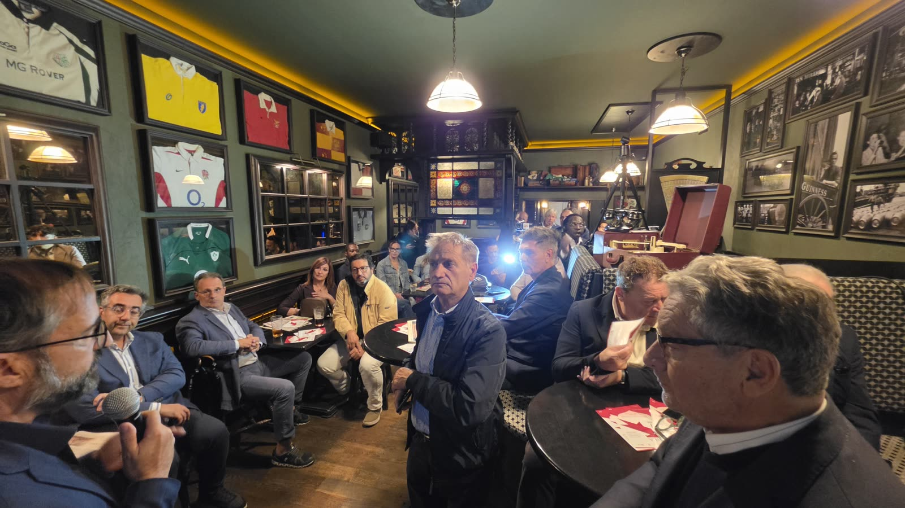

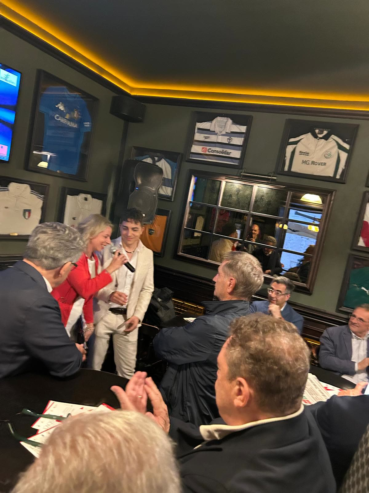

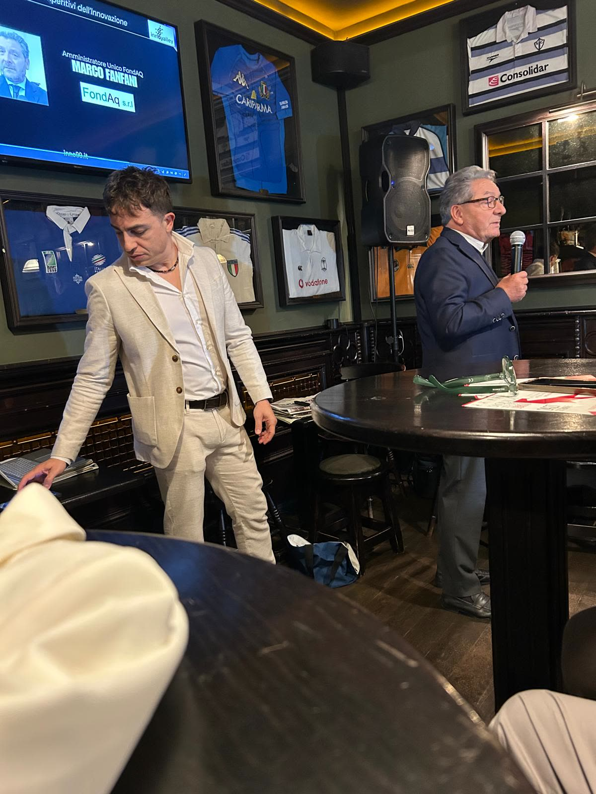
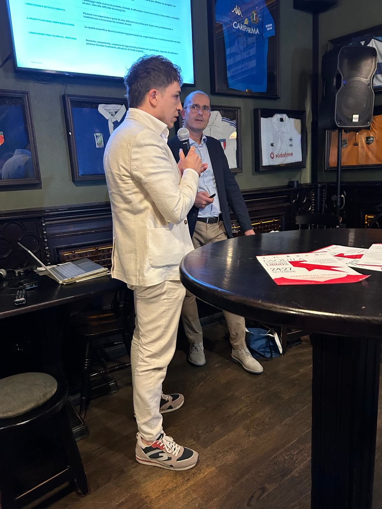
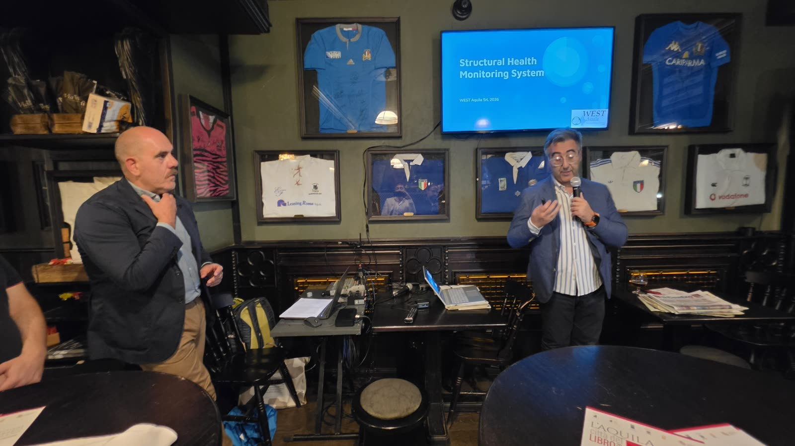


Un pub in stile irlandese nel cuore del centro storico dell'Aquila, a due passi dal Corso: legno scuro, luci calde e l'atmosfera conviviale in cui nascono le conversazioni migliori.
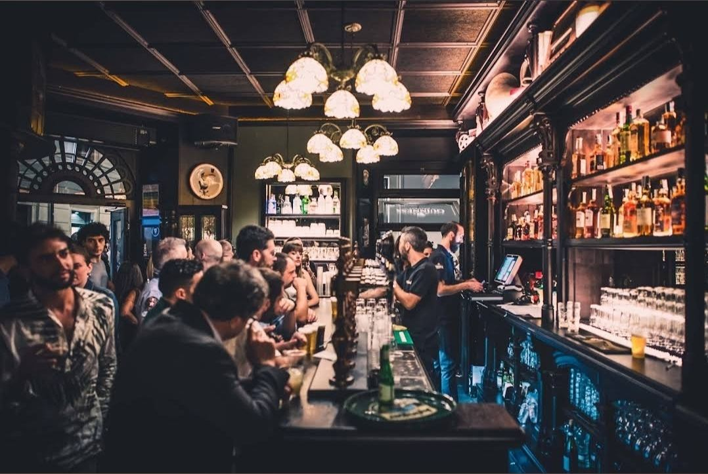
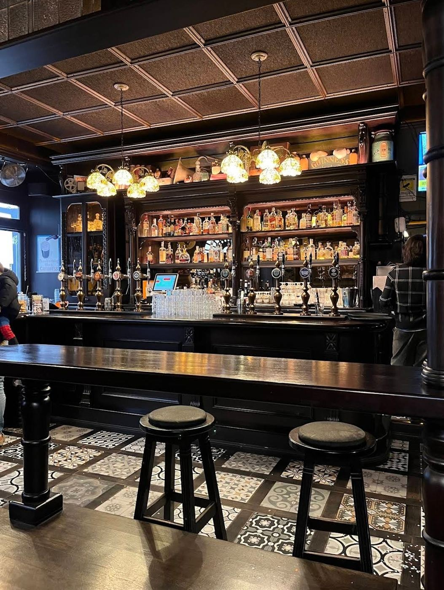
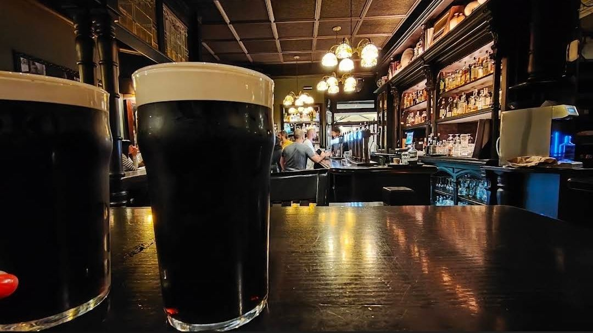
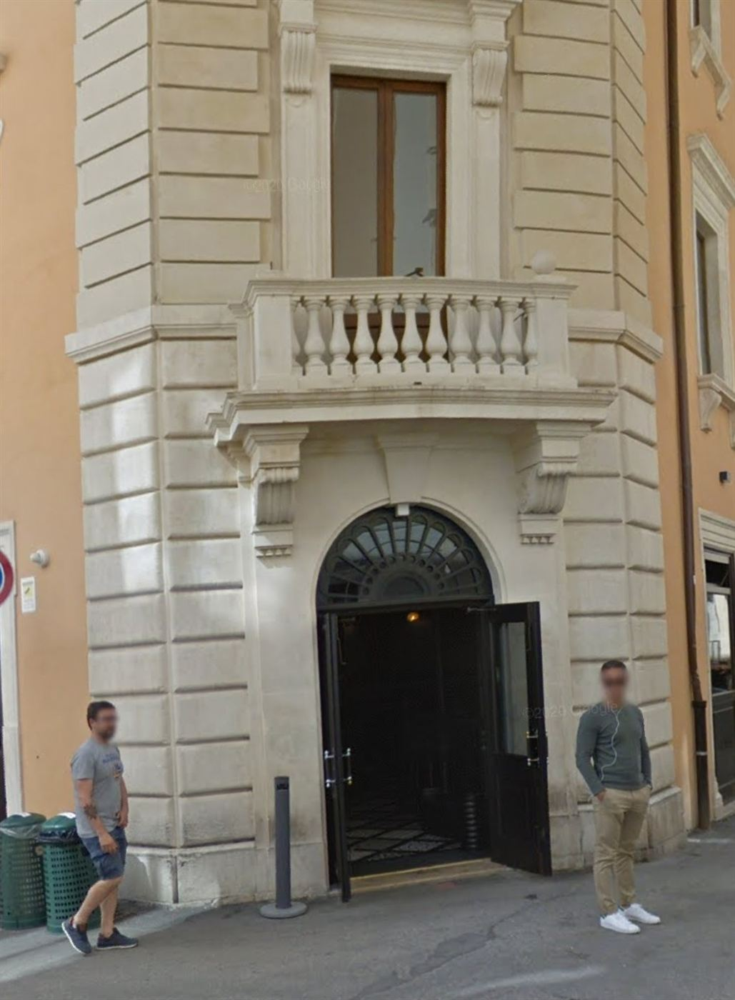
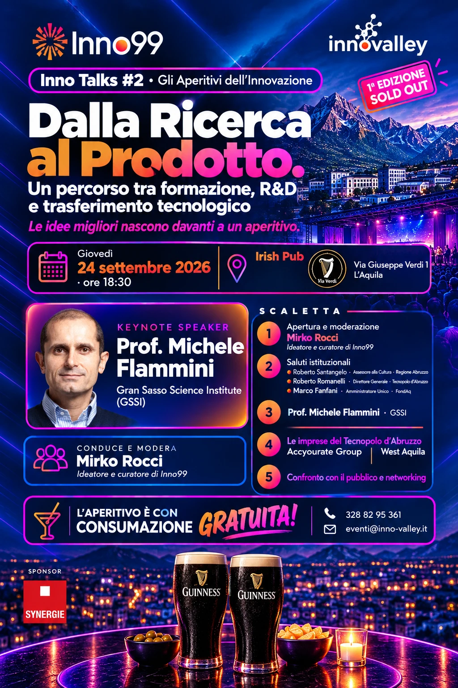
Un percorso tra formazione, R&D e trasferimento tecnologico. La locandina della serata di giovedì 24 settembre 2026 all'Irish Pub Via Verdi.
Scarica la locandina ↓Sala gremita da Ju Boss, pubblico anche all'esterno del locale. Il primo Inno Talks — "Spazio e innovazione: un dilemma di sostenibilità" — ha confermato l'intuizione alla base del progetto: portare la cultura dell'innovazione fuori dai circuiti specialistici, nel cuore della vita urbana.
Spazio e innovazione: un dilemma di sostenibilità
"La risposta della città è andata oltre le nostre più ottimistiche previsioni — e ci consegna una responsabilità precisa."
Mirko Rocci · co-ideatore e curatore di Inno99
Il debutto ha avuto la funzione fondativa che cercavamo: Innovalley è ufficialmente approdata all'Aquila, il format è riconoscibile e la città ha risposto. Un passaggio strategico per l'intero ecosistema regionale.
L'Assessore alla Cultura della Regione Abruzzo ha sottolineato il valore di un format capace di far incontrare mondi diversi e generare energie e idee nuove.
Roberto Romanelli, direttore generale: "Iniziative come questa svolgono una funzione che nessuna infrastruttura di ricerca può assolvere da sola — creare il tessuto connettivo tra scienza, impresa e comunità."
L'ingegnere già nel team CTO di Thales Alenia Space ha guidato il pubblico dentro il dilemma della nuova corsa allo spazio.
Il secondo Inno Talks ha portato all'Irish Pub Via Verdi il keynote del prof. Michele Flammini e due imprese del Tecnopolo d'Abruzzo, West Aquila e Accyourate Group. Com'è andata →
Dal debutto del 2 luglio al secondo appuntamento del 24 settembre, quotidiani e testate online raccontano gli Aperitivi dell'Innovazione.
L'annuncio della serata all'Irish Pub Via Verdi, tra formazione, R&D e trasferimento tecnologico.
Leggi l'articolo →Il keynote del prof. Michele Flammini e le due imprese del Tecnopolo d'Abruzzo che hanno fatto della ricerca il loro punto di forza.
Leggi l'articolo →«Se L'Aquila vuole trattenere i suoi talenti, deve poter mostrare che qui quel passaggio è possibile», dichiara Mirko Rocci.
Leggi l'articolo →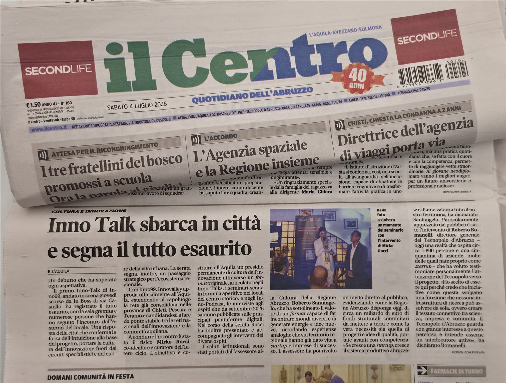
«Un debutto che ha superato ogni aspettativa: sala gremita e numerose persone che hanno seguito l'incontro dall'esterno del locale. Una risposta della città che conferma la forza dell'intuizione alla base del progetto.»
Sabato 4 luglio 2026 · pagina Cultura e Innovazione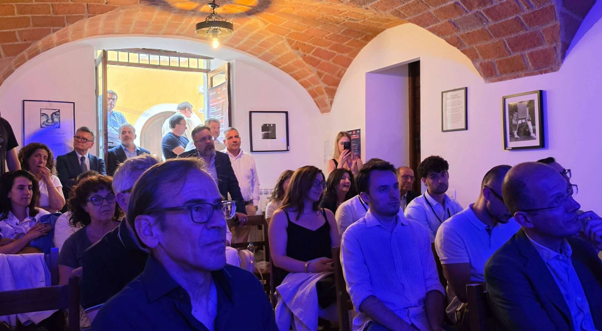
Innovalley approda ufficialmente all'Aquila estendendo la rete già consolidata nelle altre province abruzzesi.
Leggi l'articolo →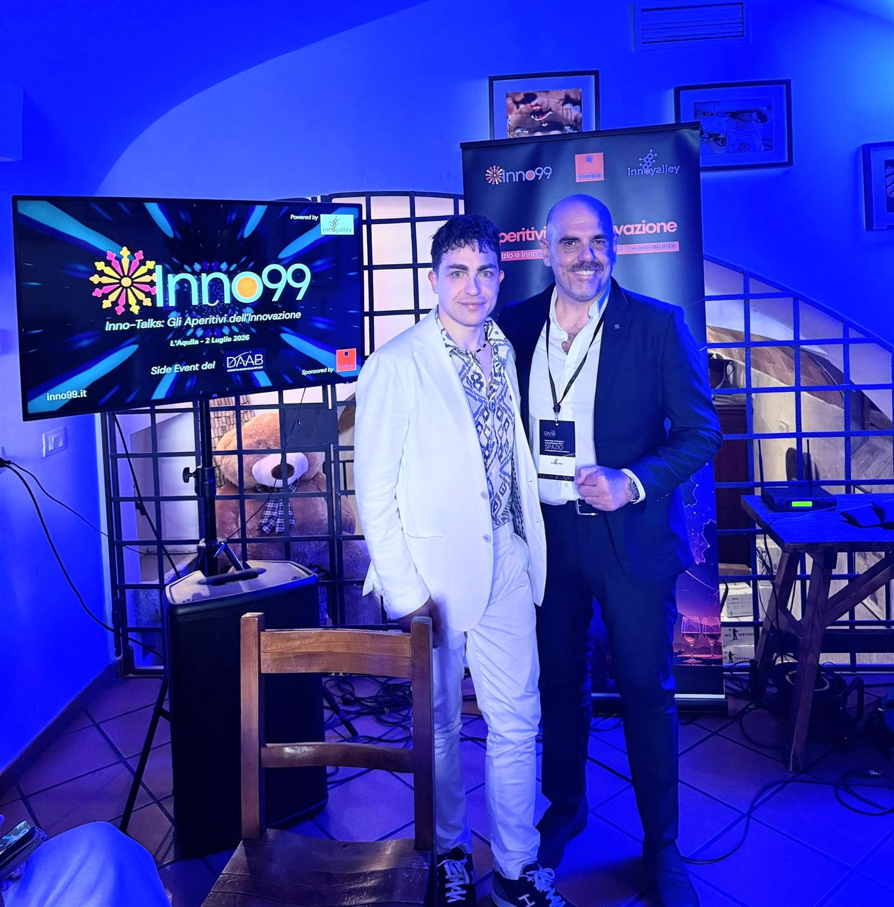
«Le idee migliori nascono davanti a un aperitivo»: locale al completo e pubblico anche all'esterno per il debutto.
Leggi l'articolo →Il racconto del debutto aquilano di Inno99 nel quadro di L'Aquila Capitale Italiana della Cultura 2026.
Leggi l'articolo →L'annuncio dell'evento inaugurale: ingresso gratuito, posti limitati e un format che unisce divulgazione e dialogo informale.
Leggi l'articolo →Da ottobre 2026 ogni speaker degli Inno Talks viene intervistato in formato podcast professionale da Mirko Rocci, un protagonista dello stesso ecosistema. Il risultato è un dialogo tra pari, più ricco e credibile.
Pubblicato su tutte le principali piattaforme digitali, per portare L'Aquila e Innovalley sulla mappa degli ecosistemi dell'innovazione.
Inno99 è il programma di Innovalley che porta la cultura dell'innovazione nell'ecosistema aquilano e abruzzese, nel quadro di L'Aquila Capitale Italiana della Cultura 2026. Il progetto, promosso da Innovalley Cube Srl, crea un ponte stabile tra le reti nazionali dell'innovazione e la comunità locale attraverso verticali tematiche in formato esperienziale, ospitate nei locali del centro storico. L'obiettivo è far incontrare imprenditori, ricercatori, professionisti e curiosi in un formato informale ma di alto profilo, in cui idee, storie e visioni si contaminano.
Gli Inno Talks sono gli Aperitivi dell'Innovazione: seminari-serata in formula aperitivo, ospitati in locali selezionati del centro storico dell'Aquila. Ogni serata unisce accoglienza, talk di relatori d'eccellenza nazionali e territoriali, conversazione guidata con la conduzione curatoriale di Mirko Rocci, confronto con il pubblico e networking, con un numero contenuto di partecipanti per garantire la qualità del confronto. Il format porta l'innovazione fuori dalle aule, dentro la vita urbana.
Inno Podcast è l'archivio vivo dell'innovazione italiana in cui ogni speaker degli Inno Talks viene intervistato in formato podcast professionale da Mirko Rocci, un protagonista dello stesso ecosistema, per un dialogo tra pari su scelte coraggiose, fallimenti formativi e intuizioni che cambiano le traiettorie. Parte da ottobre 2026 e gli episodi vengono pubblicati su Spotify, Apple Podcasts, YouTube e le altre principali piattaforme digitali.
Inno Talks #2 «Dalla ricerca al prodotto. Un percorso tra formazione, R&D e trasferimento tecnologico» si è svolto giovedì 24 settembre 2026 all'Irish Pub Via Verdi dell'Aquila, con oltre 40 partecipanti. Dopo i saluti di Claudia Pagliariccio, consigliere comunale, Maurizio Dionisio, direttore generale di ARTA Abruzzo, e Marco Fanfani, amministratore unico di FondAq, il keynote è stato affidato al prof. Michele Flammini, docente del Gran Sasso Science Institute. Il direttore generale del Tecnopolo d'Abruzzo Roberto Romanelli ha poi introdotto West Aquila, con l'ing. Stefano Tennina, e Accyourate Group, con il dott. Alejandro Chaparro Blanco. Ha condotto la serata Mirko Rocci, co-ideatore e curatore di Inno99. La diretta integrale e il resoconto della serata sono su inno99.it. Il prossimo incontro è previsto per ottobre 2026, con data in corso di definizione.
Per partecipare basta scrivere a eventi@inno-valley.it oppure chiamare il 328 82 95 361 per assicurarsi il posto: l'ingresso è gratuito e i posti sono limitati. Il debutto del 2 luglio 2026 da Ju Boss ha registrato il tutto esaurito, con pubblico anche all'esterno del locale.
Inno99 è organizzato da Innovalley Open Innovation Hub, progetto promosso da Innovalley Cube Srl e Associazione Innovalley, con lo sponsor Synergie Italia e i partner DAAB · Distretto Aerospaziale Abruzzo e L'Aquila Capitale Italiana della Cultura 2026. I contatti sono il telefono 328 82 95 361, l'email eventi@inno-valley.it e il sito www.inno-valley.it.
Il prossimo Inno Talks è previsto per ottobre, con data in corso di definizione. Scrivici o chiamaci per ricevere gli aggiornamenti e assicurarti il posto.
Scrivici per partecipare →{kind=link}